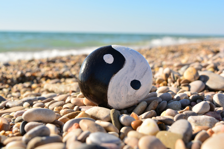
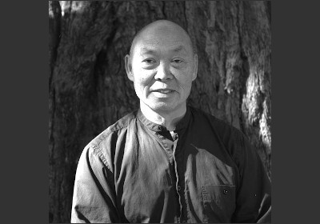
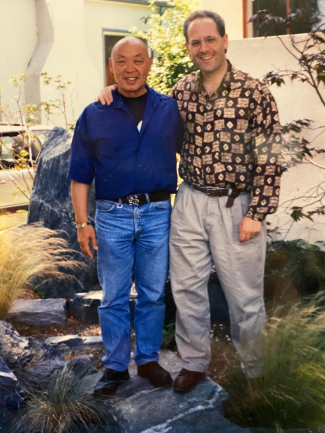
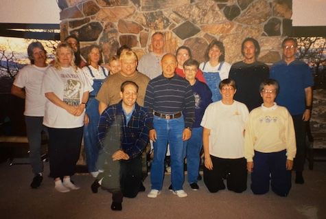
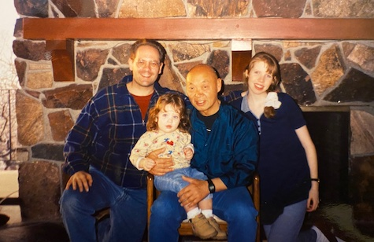
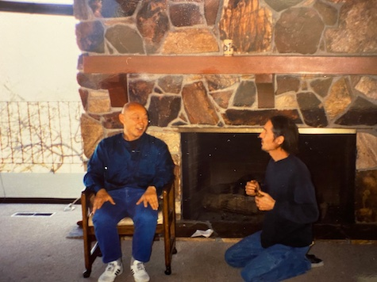

About Us

About Us
Just as the rosebud contains within it the innate form of the perfect flower, so do we all contain within ourselves the innate form of our own perfection. Under the proper conditions of sun, water and nutrients, the bud unfolds to reveal the rose. Likewise the simple conditions of the practice helps us break through a lifetime of old habits and programmed patterns of posture and movement, allowing what is essential in us – physically, mentally and spiritually – to naturally unfold. ~ Dàshī Fong Ha (1937-2019)
Daoyin Chuan, was organized in August of 1998, to provide the opportunity and environment to preserve, explore and practice the Integral Chuan Institute program for the internal arts as taught by the late Dàshī Fong Ha.
You will learn Meditation (stillness), Qigong (cultivation of Qi), Yiquan (mind-intent development), Taijiquan (moving meditation) and Push Hands (sensitivity development).
Questions?
donbstringham at icloud dot com
Dàshī Fong Ha

Sifu Fong Ha has been practicing Chinese internal arts since his childhood and has studied with many renowned teachers. He began his studies of Yang-style Taijiquan in 1953 with Tung Ying-chieh, and continued with Yang Sau-chung, the eldest son of Yang Cheng-fu. Fong’s exploration then led into the realm of I Ch’uan. One of the few I Ch’uan teachers in the West, Fong Ha is well known for his power, graciousness, and cosmopolitan charm. With humor and insight, he encourages students to be true to themselves, to recognize their inner strengths, develop at their own pace, and actualize their potentials. He directs the Integral Chuan Institute in Berkeley, California and teaches nationally and internationally. He is the author of Yiquan and the Nature of Energy: The fine art of doing nothing and achieving everything (Berkeley: Summerhouse Publications, 1996). He also produced the video, Stillness in Movement: The Practice of T’ai Chi Chuan with Master Fong Ha (Vision Arts Video, 1996)
Stand for Peace ~ Move for Joy
Eulogy

He leapt from his shoes.
Mounted a dragon.
Now soars among the heavens.
Do Nothing — Achieve Everything
At the end of technique is skill… at the end of skill is spirituality.
Don’t move the body, you train your Qi.
Don’t move your mind, you train your Spirit.
Grand thoughts and principles of a great teacher
Grandmaster/Dashi/LaoSi/Sifu Ha,CheungFong or Fong Ha (or just Fong as he frequently wanted to be called) was born and raised in Canton, China in or around 1937. In 1947, the family then moved to Hong Kong where he had a happy life there. Ha Sifu studied in a well-known Catholic school, took private lessons of Kung Fu, and started his T’ai Chi practice at the age of 16, studying with well renowned teachers. He also practiced Chinese calligraphy which he continued well into his late life.
He dreamt that he saw himself “embarking on a very big ship sailing to the United States.” There he knew right away that this was the next part of the journey. In 1958, at 21, he came to San Diego where he studied at San Diego State University. He used to practice T’ai Chi outdoors and people started to ask him questions about it. His friendliness, openness, approachability and knowledge made him a trusted teacher, and he began teaching T’ai Chi in San Diego.
Then in 1969 he moved to San Francisco and went to San Francisco State University where he graduated as a High School Teacher. He was a math teacher and taught at Lowell High School for over two decades. He continued to teach T’ai Chi in Berkeley and SF. His practice grew. Sifu Ha was always very happy to invite different T’ai Chi, Ch’i Kung and push hand masters to the states and shared their teaching with all his students, so everybody’s practice could grow deeper. For a few years, he went to China once a year to visit his masters to continue to learn from them. He also took some of his students with him on these trips. Then he moved to Berkeley in 1978 and bought his house where he lived ever since and where he continued to teach T’ai Chi and awareness to his last days in the park at the elementary school across the street where the tall and windy redwoods were perfect for standing meditation or Zhan Zhuang/Chan Chuang.
Ha Sifu studied under Grandmasters Tung,YingChieh/Dong,Yingjie (Yang Taiji); Yang,ShouChung/Yeung,SauChung (Yang Taiji); Han,XingYuan/Hon,SingYuen (Xingyi/Yiquan); Cai,SongFang (Wuji Qigong); Yu,PengSi/You,Penxi (Qigong/Yiquan); Zhao-family (Tai Chi Ruler).
He had an impact over his lifetime, and continues to have impact on many people in the afterlife. As a teacher, students discovered an ease of being which was reflected in his teachings as well as in his personal relationships. Others discovered a desire for spiritual awakening, which he combined with his personal practice of sitting meditation and mindful living. It was refreshing for him to meet someone that understood this as his former wife and accomplished T’ai Chi/Ch’i Kung teacher, also competitor in many CMAT and national tournaments would say, “l’habit ne fait pas le moine” or “the robe does not make the monk”, for conventional beliefs about T’ai Chi Masters were a challenge for him. He never chose to wear a uniform, always wore jeans, and always taught that the most important was to be comfortable and relaxed, not just with clothing but with your body, ideas, beliefs, spirit and with an open heart. He loved the potential of T’ai Chi to help develop physical power, energetic sensitivity, mindful awareness and love. For him, he was not just teaching, he lived his beliefs in everyday encounters and in his personal practice.
Family was very important to Ha Sifu, not just his personal family but his students also were part of his family. You really felt that you were walking the path of the Tao with him, side by side, moment to moment, guided by his very grounded presence and his gentle awareness. This would become the focal point of his teachings, awareness of your breath, your standing meditation, of your interconnectedness through the push hands practice, and it became the practice of its ongoing spiritual awakening. We all are better human beings and souls because of him. May we continue to be inspired by his presence and teachings upon our lives.
On behalf of the Ha Family and the Integral Ch’uan Institute family of teachers, students and practitioners worldwide
Simu/Sifu Micheline Bogey-Ha and Sifu Bruce Wolfe
What cannot lead to comfort, happiness, and gaining strength does not deserve to be called martial art. ~ Master Wang Xiang Zhai, founder of Yiquan

Videos of the late Dàshī Fong Ha
Don Stringham
I met Sifu Fong Ha in 1998 in Berkley, CA. Previously, I had been searching for a teacher who had learned Taijiquan in China. I picked up the book Warriors of Stillness and saw a picture of Sifu Fong Ha and knew I needed to meet him. Researching on the internet I was able to find his cell number and reached out to him. He first taught me Wuji Standing and Taiji Ruler. The following year and every year after that he came to Salt Lake City, UT and gave two day workshops. Truly, I miss my mentor and teacher.

Dàshī Fong Ha’s first workshop in Salt Lake City, Utah was February 1999. Here are some pics from that workshop:

Many of the students with Dàshī Fong Ha.

Dàshī Fong Ha, Don, Jenny and Baby Emma.

Dàshī Fong Ha and student.
Our Practice
Our Practice
These three internal arts create a triad of our practice:
- Qigong
- Baduanjin
- Yijinjing
- Taiji Chih (Ruler)
- Wuji Qigong (Cai Songfang)
- Yiquan
- Wang Xiangzhai (1885-1963)
- Han Xingyuan (1915-1983)
- Fong Ha (1937-2019)
- Taijiquan
- Yang Family Style
- Dong Yingjie (1897-1961)
- Yang Zhenming (1910-1985)
- Fong Ha (1937-2019)
- Tui Shou – Fixed and Moving
- Da Lu – Big Rollback
Ch’i Kung (qigong) practice is expressed in four fundamental disciplines: sitting mediation; Wu Chi Chi Kung (Wuji Qigong), or “standing mediation;” I Ch’uan (yiquan), or “intention practice;” and Tai Chi Ch’uan (taijiquan). We begin with sitting meditation and Wu Chi Ch’i Kung. Ch’i Kung, literally “practice of vital energy,” helps us break through a lifetime of old habits and programmed patterns of behavior and movement, allowing what is essential in us to come forth. This practice cultivates chi (qi), breaks down blocks to the free flow of ch’i throughout the body, and integrates the upper and lower body. I Ch’uan (or “intention practice”) develops our ability to direct ch’i, through focusing the intention. In the broader sense, this practice develops our ability to focus the mind for improved concentration, creativity, and productivity.From stillness, we begin to move. Practice of the 108 moves of the Tai Chi Ch’uan long form further develops ch’i and i, builds strength in movement, stamina, and the ability to relax in strength. At the highest level of practice, the movements of the form become informed or filled by ch’i.
Your Health and Wellness
It’s difficult to be healthy in an unhealthy environment, and unfortunately we live in an unhealthy environment. Through the diligent practice of Ch’i Kung, we cultivate our ch’i, which then begins to flow freely throughout the body, strengthening the weak points and reinforcing the strong points, and providing a defense against the insults of air pollution, toxins in our foods and water, and the stresses of our fast-paced lives.
Self Defense and the Mind
A mind that is free and at peace will recognize immediately either a kindness or an aggression, correctly interpreting and responding appropriately at once to any touch, whether that touch is physical, mental, or spiritual. In this sense our practice is a martial art; our goal is to increase our sensitivity to and awareness of outside forces that affect us physically, mentally, or spiritually. The cultivation of ch’i enhances our alertness, agility, and sensitivity.
~ Dàshī Fong Ha (1937-2019)